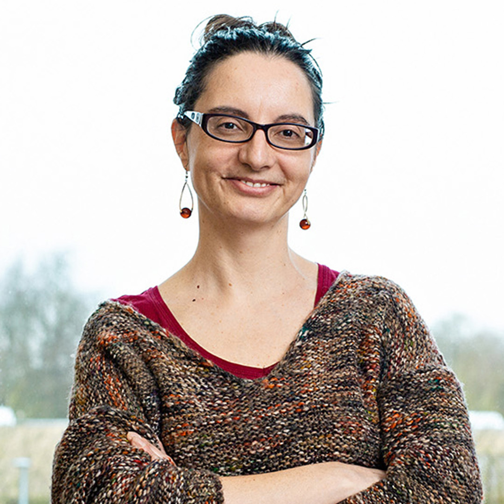

To access the recorded session of this webinar, please click here
Integrating Cyber Security and Machine Learning with Applications in Internet of Transportation and Healthcare[Slide]
|
Abstract: The collection, storage, manipulation, analysis and retention of massive amounts of data have resulted in new technologies including big data analytics and data science. It is now possible to analyze massive amounts of data and extract useful nuggets and make predictions with machine learning techniques. However, the collection and manipulation of this data has also resulted in serious security and privacy considerations. Various regulations are being proposed to handle big data so that the privacy of the individuals is not violated. Furthermore, the data being stored may also be vulnerable to cyber-attacks.
Machine Learning and Security are being integrated to solve security and privacy challenges. For example, machine learning techniques are being applied to solve security problems such as malware analysis and insider threat detection. However, there is also a concern that the machine learning techniques themselves could be attacked. Therefore, the machine learning techniques are being adapted to handle adversarial attacks. Furthermore, due to privacy violations caused by machine learning, privacy enhanced machine learning techniques are being developed.
To assess the developments on the integration of Data Science/Machine Learning and Security over the past decade and apply them to the Internet of Transportation, the presentation will focus on three aspects. First it will examine the developments on applying Data Science techniques for detecting cyber security problems such as insider threat detection as well as the handling attacks to machine learning techniques. Some developments on privacy aware and policy-based data management frameworks will also be discussed. Second it will discuss the developments on securing the Internet of Transportation and its supporting infrastructures and examine the privacy implications. Finally, it will describe ways in which Big Data, Data Science and Security could be incorporated into the Internet of Transportation and Infrastructures.
|
Prof. Bhavani Thuraisingham
Fellow of ACM, IEEE, AAAS, NAI, IMA
Founders Chair Professor
Department of Computer Science
The University of Texas at Dallas
Richardson,USA
|
Brief Bio: Dr. Bhavani Thuraisingham is the Founders Chair Professor of Computer Science and the Executive Director of the Cyber Security Research and Education Institute at the University of Texas at Dallas (UTD). She is also a visiting Senior Research Fellow at Kings College, University of London and an elected Fellow of the ACM, IEEE, the AAAS, the NAI and the BCS. She was a Cyber Security Policy Fellow at the New America Foundation for 2017-2018 focusing on workforce development. Her research interests are on integrating cyber security and data science/machine learning for the past 36 years. She has received several awards including the IEEE CS 1997 Technical Achievement Award, ACM SIGSAC 2010 Outstanding Contributions Award, the IEEE Comsoc Communications and Information Security 2019 Technical Recognition Award, the IEEE CS Services Computing 2017 Research Innovation Award, the ACM CODASPY 2017 Lasting Research Award, the IEEE ISI 2010 Research Leadership Award, the 2017 Dallas Business Journal Women in Technology Award, and the ACM SACMAT 10 Year Test of Time Awards for 2018 and 2019 (for papers published in 2008 and 2009). She was named one of 500 most influential business leaders in North Texas for 2021 and 2022 by the D Magazine’s D CEO Magazine. She co-chaired the Women in Cyber Security Conference (WiCyS) in 2016 and delivered the featured address at the 2018 Women in Data Science (WiDS) at Stanford University and serves as the Co-Director of both the Women in Cyber Security and Women in Data Science Centers at UTD. Her 41-year career includes industry (Honeywell), federal research laboratory (MITRE), US government (NSF) and US Academia. Her work has resulted in 130+ journal articles, 300+ conference papers, 180+ keynote and featured addresses, 7 US patents, 16 books as well as technology transfer of the research to commercial products and operational systems. She received her PhD from the University of Wales, Swansea, UK, and the prestigious earned higher doctorate (D. Eng) from the University of Bristol, UK.
|
Auracle: Detecting Eating Episodes with an Ear-Mounted Sensor [Slide]
|
Abstract: We propose Auracle, a wearable earpiece that can automatically recognize eating behavior. More specifically, in free-living conditions, we can recognize when and for how long a person is eating. Using an off-the-shelf contact microphone placed behind the ear, Auracle captures the sound of a person chewing as it passes through the bone and tissue of the head. This audio data is then processed by a custom analog/digital circuit board. To ensure reliable (yet comfortable) contact between microphone and skin, all hardware components are incorporated into a 3D-printed behind-the-head framework. We collected field data with 14 participants for 32 hours in free-living conditions and additional eating data with 10 participants for 2 hours in a laboratory setting. We achieved accuracy exceeding 92.8% and F1 score exceeding 77.5% for eating detection. Moreover, Auracle successfully detected 20-24 eating episodes (depending on the metrics) out of 26 in free-living conditions. We demonstrate that our custom device could sense, process, and classify audio data in real time. Additionally, we estimate Auracle can last 28.1 hours with a 110 mAh battery while communicating its observations of eating behavior to a smartphone over Bluetooth.
|
Professor David Kotz
Fellow of ACM, IEEE
Department of Computer Science
Dartmouth College
Hanover, USA
|
Brief Bio: David Kotz is the Interim Provost, the Pat and John Rosenwald Professor in the Department of Computer Science, and the Director of Emerging Technologies and Data Analytics in the Center for Technology and Behavioral Health, all at Dartmouth College. He previously served as Associate Dean of the Faculty for the Sciences and as the Executive Director of the Institute for Security Technology Studies. His research interests include security and privacy in smart homes, pervasive computing for healthcare, and wireless networks. He has published over 230 refereed papers, obtained $89m in grant funding, and mentored nearly 100 research students. He is an ACM Fellow, an IEEE Fellow, a 2008 Fulbright Fellow to India, a 2019 Visiting Professor at ETH Zürich, and an elected member of Phi Beta Kappa. He received his AB in Computer Science and Physics from Dartmouth in 1986, and his PhD in Computer Science from Duke University in 1991.
|
Sounding out wearable and audio data for health diagnostics
|
Abstract: Sensing and data analysis has made strides to improve how we understand human behaviour and health. I will reflect on the challenges that mobile and wearable health systems are introducing for the developers as well as the users. I will use examples from my group's research on exploring machine learning and data analysis for health application in collaboration with clinicians. I will discuss our project on using audio signals for disease diagnostics and our work in the context of COVID-19: a crowdsourced collected through mobile apps (covid-19-sounds.org) of respiratory sounds to pre-screen and diagnose COVID-19.
|

Professor Cecilia Mascolo
Professor of Mobile Systems
Fellow of Jesus College
Department of Computer Science and Technology
University of Cambridge, UK
|
Brief Bio: Cecilia Mascolo is the mother of a teenage daughter and a Professor of Mobile Systems in the Department of Computer Science and Technology, University of Cambridge, UK. She is co-director of the Centre for Mobile, Wearable System and Augmented. She is also a Fellow of Jesus College Cambridge and the recipient of an ERC Advanced Research Grant. She holds a PhD from the University of Bologna. Her research interests are in mobile systems and machine learning for mobile health. More details at www.cl.cam.ac.uk/users/cm542
|
Principal Host
 |
Sudip Misra, PhD (Carleton U, Canada), FNAE (India), FNASc (India), FIETE (India), FIET (UK), FRSPH (UK)
ACM Distinguished Scientist
Alexander von Humboldt Fellow (Germany)
IEEE Communications Society Distinguished Lecturer
Professor & INAE Abdul Kalam Technology Innovation National Fellow
Department of Computer Science & Engineering
Indian Institute of Technology
Kharagpur-721302
West Bengal, India
Official Website: https://cse.iitkgp.ac.in/~smisra/
SWAN Group: https://cse.iitkgp.ac.in/~smisra/swan/
|
Co-Hosts
 |
Dr. Arijit Roy
India-France Raman-Charpak Fellow,
Former Senior Research Fellow, Council of Scientific & Industrial Research
Post-Doctoral Research Fellow
Parallel Computing and Optimisation Group
University of Luxembourg, Luxembourg
Website: www.arijitroy.info
|
 |
Dr. Ayan Mondal
Assistant Professor
Department of Computer Science and Engineering
Indian Institute of Technology Indore
Khandwa Road, Simrol, Indore 453552, India
Website: https://ayanmondal.github.io/
|
Webinar Registration
All participants need to pre-register by January 13, 2022 by filling-up the following form: Registration Link
Zoom sign-in details will be shared with the registered participants using the email address provided in the registration form.
The Webinar flyer is available here.